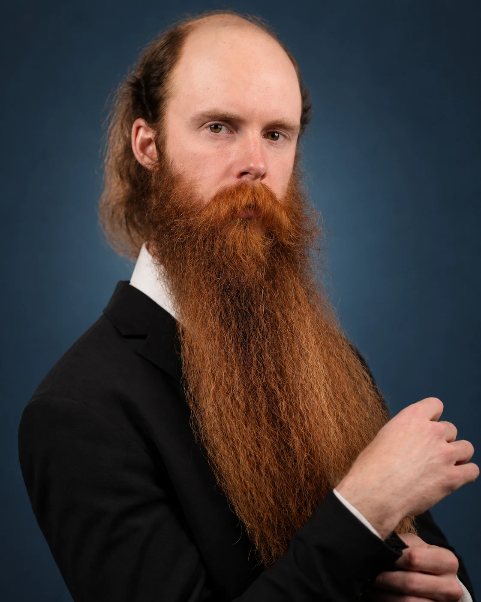

AboutLondon
London Oliver is a bright rising talent in the film industry, with work in short films and commercial projects. He resides in Los Angeles, California, and is represented by the Michael Zanuck Agency.
His 2025 improv dating video with VHS Dates went viral on Instagram, amassing 2.8 million views. It showcased his quick thinking, warmth, and comic timing, and drew praise from film and television names including Zoe Saldana, Olivia Wilde, and Adam Devine.
The series further established London's presence in the entertainment industry. The New York Times covered its rise.